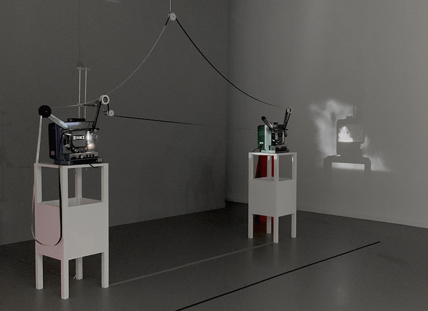
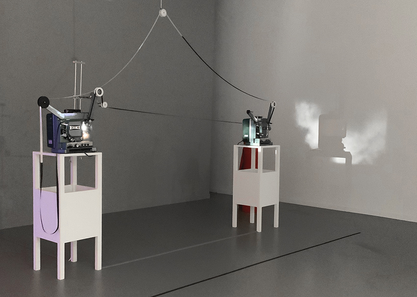
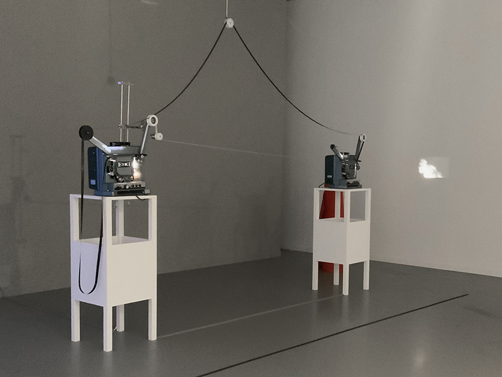

2021
Installation
Film (super16mm, b/w, silent, 10 meters in a closed loop), tension sensor, 2 plinths, 2 16mm film projectors, 1 x 8 m roll of felt
Variable dimensions
In one of the public presentations of the performance-environment We Only Guarantee the Dinosaurs (2014-15), the artist produced, in an almost completely improvised manner, a composition that would be the initial basis for the construction of La relève II. The work is an exploration of cinematic light, time and space, where projecting does not only consist of forming optical and amplified images of a film on a screen, but also of tracing connecting vectors. It also reflects on the nature of the filmic apparatus as a dialectical formation — light/darkness, negative/positive, movement/pause, interval/frame, mechanics/choreography, trajectory/ horizon, etc.
Installation view: Contemplar una superficie inestable (La casa encendida, Madrid May-Sept 2021)